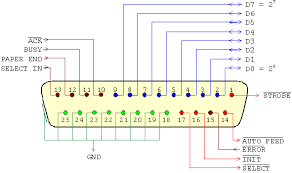
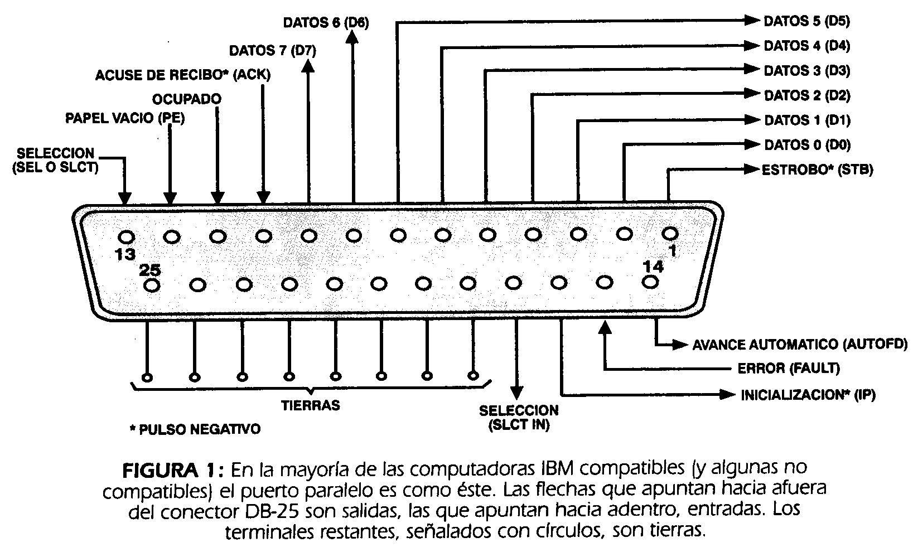

Tipos de puertos
PUERTOS DE ENTRADA / SALIDA
Cualquier aplicación de un sistema digital basado en un microprocesador o microcontrolador requiere la transferencia de datos entre circuitos externos al microprocesador y él mismo. Estas transferencias constituyen las operaciones llamadas ENTRADA y SALIDA,(input /output ) o ( I/O)
Los puertos de entrada/salida son básicamente registros externos o internos. Algunos microprocesadores proporcionan señales de control que permiten que los registros externos que forman los puertos de E/S ocupen un espacio de direcciones separada, es decir, distinto del espacio de direcciones de los registros externos que componen la memoria.
Cuando los puertos tienen asignado un espacio de direcciones separado, se dice que están en modo de ENTRADA/SALIDA AISLADA o E/S ESTÁNDAR.
Por el contrario, cuando se ubican dentro del mismo espacio que la memoria, se dice que están en modo de ENTRADA/SALIDA MAPEADA A MEMORIA o PROYECTADA EN MEMORIA.
ENTRADA/SALIDA AISLADA
Para que un microprocesador pueda implementar el modo E/S aislada son indispensables las siguientes condiciones:
-
El microprocesador debe proporcionar señales de control que permitan distinguir entre una operación con un puerto y una referencia a memoria.
-
El código de instrucciones debe tener instrucciones especiales con las que se pueda leer (entrada) o escribir (salida) en los puertos.
ENTRADA/SALIDA MAPEADA
El modo de E/S mapeada a memoria (Memory mapped I/O) se basa en que tanto las localidades de memoria como los puertos de E/S se consideran como registros externos desde el punto de vista del microprocesador.
Programación de puertos
- Programación por puerto serial 
- Programación por puerto paralelo 
Las principales herramientas de ayuda al desarrollo de sistemas basados en microcontroladores son:
-
Ensamblador: Los fabricantes suelen proporcionar el programa ensamblador de forma gratuita y en cualquier caso siempre se puede encontrar una versión gratuita para los microcontroladores más populares.
-
Compilador: Las versiones más potentes suelen ser muy caras, aunque para los microcontroladores más populares pueden encontrarse versiones demo limitadas e incluso compiladores gratuitos.
-
Depuración: Debido a que los microcontroladores van a controlar dispositivos físicos, los desarrolladores necesitan herramientas que les permitan comprobar el buen funcionamiento del microcontrolador cuando es conectado al resto de circuitos.
-
Simulador: Son capaces de ejecutar en un PC programas realizados para el microcontrolador. Los simuladores permiten tener un control absoluto sobre la ejecución de un programa, siendo ideal es para la depuración de los mismos.
-
Placas de evaluación: Se trata de pequeños sistemas con un microcontrolador ya montado y que suelen conectarse a un PC desde el que se cargan los programas que se ejecutan en el microcontrolador. Las placas suelen incluir visualizadores LCD, teclados, LEDs, fácil acceso a los pines de E/S, etc
-
Emuladores en circuito: Se trata de un instrumento que se coloca entre el PC anfitrión y el zócalo de la tarjeta de circuito impreso donde se alojará el microcontrolador definitivo. El programa es ejecutado desde el PC, pero para la tarjeta de aplicación es como si lo hiciese el mismo microcontrolador que luego irá en el zócalo.
Aplicaciones de puertos
OPERACIÓN DE LECTURA EN LOS PUERTOS DEL MICROCONTROLADOR
La operación de lectura o de adquisición de datos no representa ningún tipo de problema; solamente se deberá cambiar el orden de los operandos en la instrucción respecto a la de escritura. Para la operación de lectura, el formato de la instrucción más
habitual es el siguiente:
MOV <dato>, PX ; dato <- PX
Estándares de buses
PC/104
Se lanzó en 1992, acercando la tecnología PC a las aplicaciones de control industrial. El estándar PC/104 usa el bus ISA como un bus portador en el sistema, sobre el que las unidades se interconectan, semejante al estándar plug-in o las tarjetas de expansión
de la época. En 1994 el estándar se amplió para incluir el bus PCI y especificó el PC/104 Plus como el estándar. En el estándar PC/104 Plus, tanto el bus ISA como el bus PCI se declaran como buses portadores en el sistema y,
por lo tanto, disponibles para la expansión del sistema. Ambos sistemas de conectores ocupan alrededor del 30% del área de la tarjeta.
La creciente complejidad de las tarjetas y el énfasis en el bus PCI condujo en el año 2004 a que el uso de PC/104 con bus ISA comenzara a utilizarse en menor medida frente al uso del estándar PC/104 Plus. Para aplicaciones en las que el bus ISA es necesario, están disponibles las tarjetas que hacen de puente entre PCI e ISA y por tanto permite el uso de expansiones o tarjetas ISA en soluciones PCI-104. Existen numerosos desarrollos en el mercado, dentro de áreas tan diferentes como máquinas herramientas, control de sistemas de riego o aplicaciones militares. Por este motivo, el estándar PC/104 sigue manteniendo, gracias a su robustez, una parte alta del mercado embedded
Nota:
Más de 100 fabricantes de tarjetas respaldan actualmente el estándar PC/104 y ofrecen una solución para casi cada aplicación. En comparación con otras soluciones, el estándar PC/104 es un estándar real y de ese modo permite el intercambio seguro de tarjetas de diferentes fabricantes, asegurando una disponibilidad a largo tiempo.
Manejo del bus
Selección del Bus
Con el objetivo de solucionar los problemas antes mencionados y de poder reusar nuestros diseños así como también usar diseños realizados por otros grupos adoptamos el estándar de interconexión Wishbone.
En una primera aproximación creamos un bus de expansión específicamente creado para el microcontrolador. Esto tiene importantes desventajas, entre ellas:
-
Para conectar periféricos creados por otros grupos de trabajo es necesario adaptarlos a la señalización del bus en cuestión.
-
Periféricos diseñados para ese bus no servían para ser usados en otros diseños con buses de otro tamaño. Por ejemplo: no servían para un bus de 16 o 32 bits sin ser adaptados.
Aplicaciones de buses
Bus de Direcciones:
Este es un bus unidireccional debido a que la información fluye es una sola dirección, de la CPU a la memoria ó a los elementos de entrada y salida. La CPU sola puede colocar niveles lógicos en las n líneas de dirección, con la cual se genera 2n posibles direcciones diferentes. Cada una de estas direcciones corresponde a una localidad de la memoria ó dispositivo de E/S.
Bus de Datos
Este es un bus bidireccional, pues los datos pueden fluir hacia ó desde la CPU. Los m terminales de la CPU, de D0 - Dm-1 , pueden ser entradas ó salidas, según la operación que se esté realizando ( lectura ó escritura ).
Bus de Control
Este es un bus unidireccional debido a que la información fluye es una sola dirección, de la CPU a la memoria ó a los elementos de entrada y salida. La CPU sola puede colocar niveles lógicos en las n líneas de dirección, con la cual se genera 2n posibles direcciones diferentes. Cada una de estas direcciones corresponde a una localidad de la memoria ó dispositivo de E/S.

Comunicación
Selección del Bus
Un conversor ADC puede convertir un voltaje en un numero binario digital. Los conversores A/D son utilizados en cualquier lugar donde sea necesario procesar una señal, almacenarla o transportarla en forma digital. La resolución del conversor indica el número de valores discretos que se pueden obtener dependiendo del rango del voltaje de entrada. Usualmente es expresado en bits. Los microcontroladores típicamente traen incorporador conversores de 8, 10, 12 o 16 bits. Por ejemplo un ADC que codifica una señal análoga de 256 valores discretos (0..255) tiene una resolución de 8 bits, ya que 2^8 = 256.
nota:
La resolución también puede ser definida en términos eléctricos, y expresada en volts. La resolución de un ADC es igual al mayor voltaje que se pueda medir dividido por el número de valores discretos